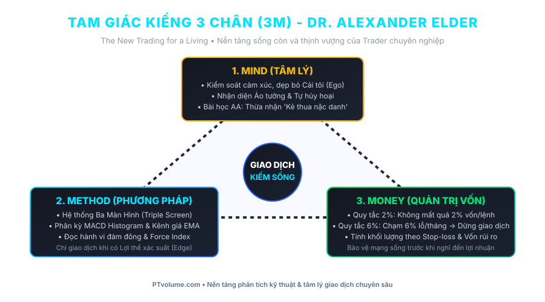
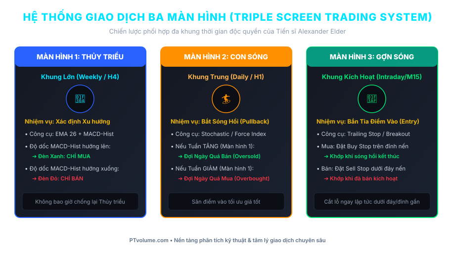

Một bác sĩ phẫu thuật xuất sắc không nghĩ về số tiền viện phí nhận được khi đang cầm dao mổ; ông ấy tập trung 100% vào từng đường rạch chính xác để cứu sống bệnh nhân. Một trader chuyên nghiệp cũng vậy: Hãy tập trung vào việc thực hiện một giao dịch đúng quy trình và đúng kỷ luật, tiền bạc sẽ tự động chảy về túi bạn như một hệ quả tất yếu.
1. Giới Thiệu Tác Giả & Kiệt Tác "The New Trading For A Living"
Được xuất bản lần đầu năm 1993 và tái bản với phiên bản nâng cấp toàn diện quốc tế, "Phương Pháp Mới Để Giao Dịch Kiếm Sống" (The New Trading for a Living) của Tiến sĩ Alexander Elder được coi là một trong những cuốn sách giáo khoa kinh điển và bán chạy nhất mọi thời đại của giới tài chính Phố Wall.
Điểm độc nhất vô nhị làm nên tên tuổi của tác phẩm là góc nhìn của tác giả: Alexander Elder vừa là một bác sĩ tâm thần học được đào tạo bài bản, vừa là một nhà giao dịch chuyên nghiệp thực chiến. Ông không nhìn thị trường như một cỗ máy toán học vô tri, mà xem thị trường là một đám đông tâm lý khổng lồ đang giằng xé giữa Lòng Tham và Nỗi Sợ Hãi.

Theo Tiến sĩ Elder, sự thành công bền vững trong giao dịch tự do không đến từ một mẹo vặt hay chỉ báo ma thuật đơn lẻ, mà dựa trên Kiềng Ba Chân Vững Chắc (Mô hình 3M):
- 1. Mind (Tâm Lý Cá Nhân): Kiểm soát cảm xúc, chế ngự Cái tôi (Ego), nhận diện các cơ chế tự hủy hoại bản thân và rèn luyện tính kỷ luật của một chuyên gia y khoa.
- 2. Method (Phương Pháp Kỹ Thuật): Phân tích hành vi đám đông qua biểu đồ, khối lượng và hệ thống đa khung thời gian kinh điển Triple Screen Trading System.
- 3. Money (Quản Trị Rủi Ro & Vốn): Ứng dụng mô hình toán học nghiêm ngặt qua Quy tắc 2% (chống cú đớp cá mập) và Quy tắc 6% (chống đàn cá piranha rỉa chết tài khoản).
2. Tóm Tắt Cấu Trúc Toàn Bộ 11 Phần Của Cuốn Sách
Cuốn sách được cấu trúc chặt chẽ qua 11 phần lớn, dẫn dắt độc giả từ chiều sâu tâm lý nội tâm đến các công cụ kỹ thuật thực chiến và quy trình quản trị chuyên nghiệp:
| Phần | Chủ Đề Trọng Tâm | Khái Niệm Cốt Lõi |
|---|---|---|
| Phần 1: Tâm Lý Cá Nhân | Nguồn gốc sâu xa của mọi thua lỗ trên thị trường | 3 Ảo tưởng, Tự hủy hoại, Bài học từ Hội Nghiện Rượu AA |
| Phần 2: Tâm Lý Đám Đông | Bản chất xã hội học của thị trường tài chính | Giá là sự đồng thuận giá trị, Tâm lý bầy đàn, Xu hướng |
| Phần 3: Biểu Đồ Cổ Điển | Đọc hành vi mua bán trực tiếp trên đồ thị | Hỗ trợ/Kháng cự, Kênh giá, Đuôi Kangaroo (Kangaroo Tails) |
| Phần 4: PTKT Bằng Máy Tính | Chỉ báo xu hướng và dao động toán học | EMA, MACD & Phân kỳ MACD Histogram, ADX, RSI, Stochastic |
| Phần 5: Khối Lượng & Thời Gian | Đo lường năng lượng dòng tiền thông minh | Volume Spread, OBV, Accumulation/Distribution, Force Index |
| Phần 6 & 7: Hệ Thống Giao Dịch | Chiến lược phối hợp đa khung thời gian độc quyền | Hệ Thống Ba Màn Hình (Triple Screen), Impulse System, Channels |
| Phần 8: Phương Tiện Giao Dịch | Đặc tính từng thị trường tài chính | Cổ phiếu, Hàng hóa Phái sinh (Futures), Quyền chọn, Forex |
| Phần 9: Quản Lý Rủi Ro | Bảo toàn tính mạng và sinh tồn cho tài khoản | Tam Giác Sắt, Quy Tắc 2%, Quy Tắc 6%, Hồi phục sau sụt giảm |
| Phần 10: Điểm Vào & Cắt Lỗ | Thực tế vận hành lệnh trên thị trường | Cắt lỗ không cầu may, Chốt lời "Biết đủ", Đánh giá Giao dịch Điểm A |
| Phần 11: Kỷ Luật & Nhật Ký | Quy trình biến giao dịch thành nghề nghiệp | Bài tập về nhà buổi sáng, Bảng chấm điểm, Nhật ký Trade Diary |
3. Chuyên Đề: Những Bài Học Tâm Lý Giao Dịch Đắt Giá Nhất
3.1. Phá Vỡ 3 "Ảo Tưởng" Chết Người Của Trader Nghiệp Dư
Tiến sĩ Elder khẳng định rằng hầu hết những người mới thất bại không phải vì thị trường quá phức tạp, mà vì họ bị giam cầm trong những ảo tưởng vô căn cứ:
- Ảo tưởng về Trí tuệ (The Myth of Brain): Nghĩ rằng những người học rộng, tiến sĩ, giáo sư hay có IQ cao sẽ dễ dàng thống trị thị trường. Sự thật: Thị trường không phải là một bài kiểm tra logic học. Rất nhiều người thông minh bị đánh bại vì cái tôi quá lớn khiến họ không thể chấp nhận mình sai khi lệnh bị âm.
- Ảo tưởng về Tiền vốn (The Myth of Capital): Tự an ủi rằng: "Tôi cháy tài khoản chỉ vì vốn của tôi quá nhỏ (500$ hay 1.000$), nếu tôi có 100.000$ thì tôi đã đầu tư an toàn và thắng lớn". Elder vạch trần: Một tài xế không biết lái xe sẽ đâm nát chiếc Ferrari nhanh không kém gì chiếc xe đạp. Tài khoản lớn chỉ khiến kẻ không có phương pháp và kỷ luật cháy chậm hơn và mất nhiều tiền hơn.
- Ảo tưởng về Cỗ Máy Tự Động (The Myth of Autopilot): Tìm kiếm "chén thánh", các con bot giao dịch tự động không bao giờ thua hoặc nghe theo những "chuyên gia phím kèo" để mong làm giàu mà không cần đổ mồ hôi nghiên cứu.
Nhiều người bước vào thị trường tài chính không phải vì mục đích kiếm tiền lý trí, mà nhằm thỏa mãn cảm giác phiêu lưu mạo hiểm (adrenalin), giải tỏa sự cô đơn, hoặc tìm một cách vô thức để tự trừng phạt bản thân sau những thất bại ngoài đời. Họ giao dịch bốc đồng như những con bạc khát nước: Sau một chuỗi thắng nhỏ thì sinh ra tự cao tự đại (Euphoria), sau đó all-in vào một lệnh rủi ro cao và cháy sạch.
3.2. Bài Học Kinh Điển Từ Hội Người Nghiện Rượu Nặc Danh (AA)
Phát hiện mang tính đột phá nhất của Alexander Elder khi hành nghề bác sĩ tâm thần học là sự tương đồng đáng kinh ngạc giữa một người nghiện rượu nặng và một Trader liên tục thua lỗ.

Trong chương trình 12 bước của tổ chức Alcoholics Anonymous (AA), người nghiện rượu không bao giờ hồi phục nếu chỉ tự nhủ "từ nay tôi sẽ uống ít lại" hay "tôi vẫn kiểm soát được bản thân". Họ chỉ bắt đầu hồi sinh khi đứng trước gương và dũng cảm thốt lên: "Tôi là một kẻ nghiện rượu và tôi hoàn toàn bất lực trước rượu bia."
Áp dụng vào thị trường, Elder sáng lập khái niệm "Những Kẻ Thua Cuộc Nặc Danh" (Losers Anonymous):
"Chào mọi người, tôi tên là... và tôi là một kẻ thua cuộc. Tôi hoàn toàn bất lực trước những chuyển động ngẫu nhiên của thị trường. Tôi không thể dự đoán tương lai, tôi không thể bắt thị trường làm theo ý muốn của mình. Điều duy nhất tôi có thể kiểm soát là lượng tiền rủi ro trên mỗi lệnh và kỷ luật cắt lỗ tuyệt đối của chính bản thân mình."
Chỉ khi bạn chấp nhận sự thật rằng thua lỗ nhỏ là một chi phí kinh doanh không thể tránh khỏi và bạn từ bỏ hoàn toàn thói quen gồng lỗ vô căn cứ, bạn mới chính thức bước chân vào hàng ngũ những trader có lợi nhuận.
3.3. Hiểu Bản Chất Của Giá Cả: Sự Đồng Thuận Tạm Thời Về Giá Trị
Giá trên biểu đồ không phải là một con số thiêng liêng cố định. Theo Elder, Giá cả tại mọi thời điểm chỉ là sự đồng thuận tạm thời về giá trị giữa 3 nhóm đối tượng:
- Phe Mua (Bulls): Đặt cược rằng giá sẽ tiếp tục tăng lên.
- Phe Bán (Bears): Đặt cược rằng giá sẽ sụt giảm sâu hơn.
- Phe Đứng Ngoài Quan Sát (Undecided): Lực lượng âm thầm nhưng có sức mạnh áp đảo. Khi nhóm này mất kiên nhẫn và nhảy vào một bên, họ sẽ tạo ra những cơn sóng thần xu hướng.
Biểu đồ giá thực chất là bản đồ đo lường tâm lý bầy đàn nguyên thủy. Người thắng cuộc không tranh cãi với đám đông; họ đứng ngoài quan sát sự hưng phấn tột cùng hoặc sự hoảng loạn tột độ của đám đông để đưa ra quyết định săn mồi chuẩn xác.
4. Hệ Thống Giao Dịch Ba Màn Hình (Triple Screen Trading System)
Được sáng chế vào năm 1985 và tinh chỉnh qua hàng thập kỷ, Hệ thống Ba Màn Hình giải quyết triệt để xung đột kinh điển của phân tích kỹ thuật: Một chỉ báo trên khung Ngày báo Mua, nhưng trên khung Tuần lại báo Bán.

Chi tiết 3 bước vận hành của Hệ thống:
- Màn hình 1 (Thủy triều Thị trường - Khung thời gian lớn hơn 5 lần, VD: Tuần / H4): Dùng để xác định xu hướng chủ đạo. Elder sử dụng độ dốc của Đường trung bình EMA 26 kết hợp với độ dốc của MACD-Histogram. Nếu MACD-Histogram dốc lên: Chỉ được phép MUA hoặc Đứng ngoài; tuyệt đối cấm Bán khống.
- Màn hình 2 (Con sóng Ngược chiều - Khung thời gian trung bình, VD: Ngày / H1): Tìm kiếm điểm điều chỉnh (Pullback) ngược xu hướng lớn. Dùng các chỉ báo dao động nhạy như Stochastic hoặc Force Index 2 ngày. Khi Màn hình 1 tăng, ta kiên nhẫn chờ Màn hình 2 rơi vào vùng Quá bán (Oversold) để chuẩn bị rình mua giá tốt.
- Màn hình 3 (Gợn sóng Kích hoạt - Khung thời gian nhỏ, VD: M15 / Intraday): Sử dụng lệnh chờ kỹ thuật Buy Stop (đặt cao hơn đỉnh nến ngày hôm trước 1 tick) hoặc Sell Stop để khớp lệnh ngay khi nhịp điều chỉnh chấm dứt và xu hướng lớn tiếp tục bùng nổ.
5. Quản Lý Rủi Ro: Quy Tắc 2% & Quy Tắc 6% Cứu Mạng
Elder ví vốn giao dịch như lượng dưỡng khí trong bình của một thợ lặn biển sâu: Hết oxy đồng nghĩa với cái chết ngay tức khắc. Ông xây dựng 2 quy tắc quản trị rủi ro toán học bất khả xâm phạm:
Số tiền bạn chấp nhận mất cho MỘT LỆNH GIAO DỊCH DUY NHẤT (bao gồm cả phí hoa hồng và độ trượt giá Slippage) tuyệt đối không được vượt quá 2% tổng vốn tài khoản.
Công thức tính khối lượng giao dịch chuẩn:
Số Lot / Cổ Phiếu = (Tổng Vốn × 2%) ÷ (Khoảng cách từ Giá Vào đến Giá Cắt Lỗ)
Nếu trong một tháng dương lịch, tổng số tiền bạn đã thua lỗ cộng với số tiền rủi ro trên các lệnh đang mở chạm ngưỡng 6% tổng tài khoản:
BẬT CHẾ ĐỘ PHÒNG THỦ KHẨN CẤP: ĐÓNG TOÀN BỘ CÁC LỆNH ĐANG MỞ, HỦY MỌI LỆNH CHỜ VÀ TUYỆT ĐỐI KHÔNG GIAO DỊCH CHO ĐẾN HẾT THÁNG ĐÓ.
Ý nghĩa tâm lý: Quy tắc này là phanh hãm tự động triệt tiêu tâm lý cay cú muốn trả thù thị trường (*Revenge Trading*), bảo toàn 94% vốn để bạn bình tâm nghỉ ngơi và quay lại vào tháng sau.
6. Kỷ Luật Thực Chiến: Bài Tập Buổi Sáng & Nhật Ký Giao Dịch
Để trở thành một nhà giao dịch chuyên nghiệp sống được với nghề, Elder yêu cầu thực hiện nghiêm túc 2 công việc bắt buộc mỗi ngày:
6.1. Bài Tập Về Nhà Buổi Sáng (Daily Homework)
Trước khi thị trường mở cửa, trader cần trả lời trung thực 5 câu hỏi tự vấn tâm lý:
- Sức khỏe thể chất hôm nay ra sao? (Mệt mỏi hoặc ốm đau tuyệt đối không vào lệnh).
- Tâm trạng hiện tại thế nào? (Có đang hưng phấn quá mức, lo âu hay giận dữ không?).
- Hôm qua mình đã giao dịch đúng kỷ luật chưa?
- Kế hoạch giao dịch cụ thể sáng nay đã được viết ra giấy chưa?
- Lịch trình hôm nay có bận rộn không? (Nếu không đủ thời gian theo dõi, hãy đứng ngoài).
6.2. Nhật Ký Giao Dịch (Trade Diary)
Sự khác biệt duy nhất giữa một con bạc và một trader chuyên nghiệp là cuốn sổ ghi chép. Mỗi lệnh giao dịch phải có ảnh chụp màn hình biểu đồ trước khi vào lệnh, lý do vào lệnh theo hệ thống, điểm cắt lỗ, điểm chốt lời, và cảm xúc thực tế sau khi đóng lệnh.
Hãy cho tôi xem nhật ký giao dịch của bạn trong 3 tháng qua, tôi sẽ nói chính xác bạn là một trader kiếm được tiền hay một kẻ sắp cháy tài khoản!
Thảo Luận Triết Lý Dr. Alexander Elder (2)